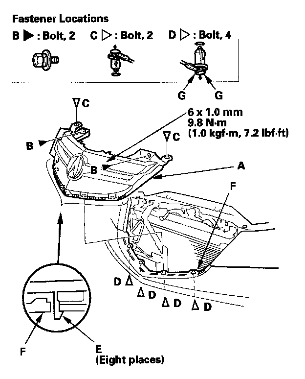
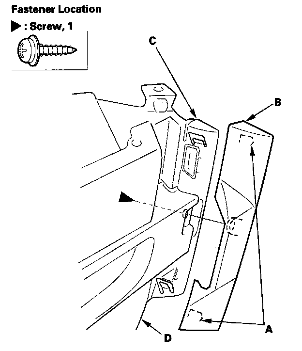

Front Grille
Front Grille ReplacementSpecial Tools Required
KTC trim tool set SOJATP2014 *
* Available through the American Honda Tool and Equipment Program
Grille Replacement
NOTE: Take care not to scratch the front bumper and body.
1. Remove the front bulkhead cover.

2. Remove the front grille (A).
1. Remove the bolts (B) and clips (C, D).
2. Release the hooks (E) of the grille from the front bumper (F) by pulling the grille upward.
NOTE: To remove the clips D, pry the inner clip up at the edge near the line (G) on its head.
3. Install the grille in the reverse order of removal, and note these items:
- If the clips are damaged or stress-whitened, replace them with new ones.
- Push the clips and hooks into place securely.
Trim Replacement
NOTE:
- Take care not to scratch the front grille.
- Use the appropriate tool from the KTC trim tool set to avoid damage when removing components.
1. Remove the front grille.

2. Remove the screw. From behind the grille, pry up on the hooks (A) with a trim tool, then remove the front grille trim (B), and the front grille seal (C) from the front grille base (D). The left front grille trim is shown; the right front grille trim is similar.
3. Install the trim in the reverse order of removal, and push the hooks into place securely.